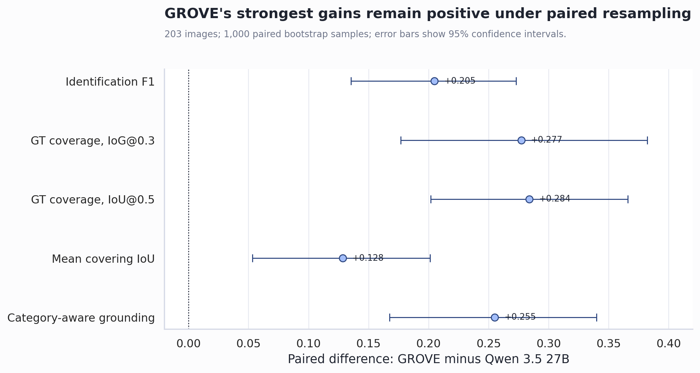
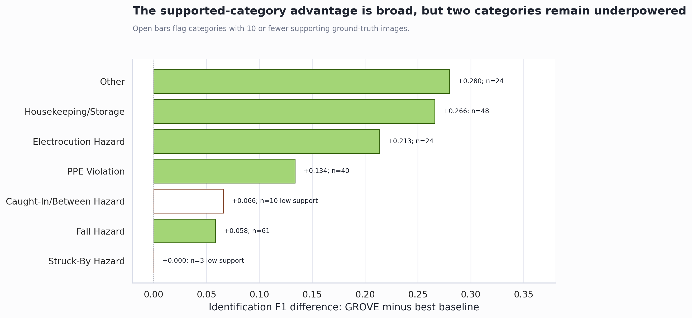
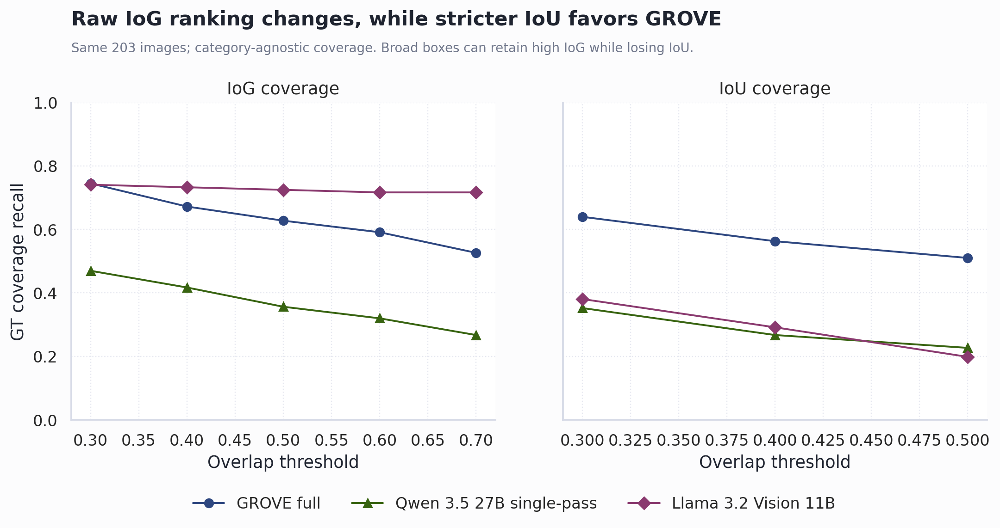

GROVE: Strongest Defensible Paper Claims
Technical Summary
The strongest defensible conclusion is benchmark-specific: GROVE materially outperforms the best tested single-pass baseline on hazard identification and on strict, category-aware grounding metrics. The paired F1 difference is +0.2047 with 95% CI [0.1353, 0.2728]. The evidence does not establish a universal limit for single-pass VLMs, and raw category-agnostic IoG is not threshold-invariant.
Paired evidence supports the primary benchmark claim
All selected paired differences favor GROVE, and every displayed 95% confidence interval excludes zero. This supports comparative claims about the tested systems, while leaving architecture-wide generalization outside the evidence.

| Metric | Difference | 95% CI | p-value |
|---|---|---|---|
| precision | +0.2135 | [0.1316, 0.2925] | 0.0000 |
| recall | +0.1914 | [0.1143, 0.2723] | 0.0000 |
| f1 | +0.2047 | [0.1353, 0.2728] | 0.0000 |
| gt_coverage_iog03 | +0.2771 | [0.1767, 0.3820] | 0.0000 |
| iou_at_0_5 | +0.2838 | [0.2016, 0.3658] | 0.0000 |
| mean_iou_covering | +0.1283 | [0.0531, 0.2011] | 0.0020 |
| category_aware_grounding_success_iog03 | +0.2551 | [0.1675, 0.3398] | 0.0000 |
Use strong claims for supported categories and explicit caution for sparse ones
Fall, electrocution, PPE, and housekeeping/storage have sufficient support and GROVE F1 values near or above 0.78. Struck-by and Caught-in/Between do not support strong category-level conclusions.

| Category | Support | GROVE F1 | 95% CI | Interpretation |
|---|---|---|---|---|
| Struck-By Hazard | 3 | 0.0000 | [0.0000, 0.0000] | Low support; cite cautiously. |
| Caught-In/Between Hazard | 10 | 0.1429 | [0.0000, 0.4286] | Low support; cite cautiously. |
Grounding is robust under strict localization, not every raw IoG threshold
Llama's broad boxes retain high IoG as the threshold increases, but lose substantially under IoU and category-aware box-and-label criteria. The manuscript should therefore frame GROVE's advantage around joint localization quality rather than claim dominance at every IoG threshold.

Claim-by-claim recommendation
| Evidence level | Defensible claim | Required boundary | Controlling artifact |
|---|---|---|---|
| Strong | On the 203-image benchmark, GROVE outperformed the best tested single-pass baseline in hazard identification. | Applies to the tested open-weight systems and benchmark. | table_2_paired_tests.csv |
| Strong | GROVE's grounding advantage is strongest under strict localization and joint box-and-label criteria, rather than every IoG threshold. | Raw IoG ranking changes because broad boxes can score well. | table_2_paired_tests.csv; iog/iou/box_label_sensitivity.csv |
| Strong | Performance is strongest on adequately supported categories and should be interpreted cautiously for sparse categories. | Sparse-category estimates have wide or degenerate intervals. | table_4_per_category_performance.csv |
| Moderate | Primary GroundingDINO explains most cached grounding coverage, while fallback grounding mainly recovers otherwise ungrounded hazards. | Fallback-only primary grounding was NOT_RUN. | table_1_component_ablation_completed.csv |
| Moderate | Path 2 verification and deterministic reconciliation provide small incremental improvements in the matched trace control. | Descriptive trace-level deltas; not compared with the archived run. | table_1_component_ablation_completed.csv |
| Moderate | The full system produces fewer false-positive no-hazard images than the tested single-pass baselines. | Do not attribute the difference causally to compliance rules. | compliance_ablation_nohazard_fp.csv |
| Sensitivity only | Reporting both seven-category and six-category results improves transparency about the heterogeneous Other category. | Evaluation-only; it does not measure prompt-level redistribution. | no_other_ablation.csv |
Scope and Method
The analysis uses the fixed 203-image OSHA-aligned evaluation universe, canonical seven-category taxonomy, cached model outputs, 1,000-image-level bootstrap resamples, and one-to-one greedy category-aware grounding matches. Full GROVE is compared with the best baseline on paired image samples. Trace-derived component removals are compared only with the trace-enabled GROVE control, not with the archived paper-facing run.
Claims that remain unresolved
- Do not claim that fallback-only grounding is effective as a primary grounder.
- Do not causally attribute low false-positive rates to compliance rules.
- Do not claim that exact caption-only or modular image-only ablations prove the caption's contribution.
- Do not claim that output schema is ruled out as an explanation without the matched-schema rerun.
- Do not claim a universal single-pass VLM ceiling.
Recommended manuscript wording
Main claim: "On our 203-image OSHA-aligned benchmark, GROVE outperformed the tested single-pass open-weight VLM baselines in hazard identification and in strict category-aware grounding. The advantage persisted under paired bootstrap comparisons and stricter IoU and box-and-label criteria, although raw category-agnostic IoG rankings varied with threshold because broad boxes can obtain high coverage."
Modularity claim: "The results support modular decomposition under the tested setup. Trace-derived controls indicate small incremental contributions from Path 2 verification and deterministic reconciliation, while primary GroundingDINO accounts for most cached grounding coverage and fallback primarily reduces missing localizations."
Category claim: "Performance is strongest for categories with adequate support; Struck-by and Caught-in/Between estimates remain too sparse for strong category-level conclusions."
Highest-value remaining experiments
- Run the matched-schema Qwen 3.5 9B baseline to separate decomposition from formatting effects.
- Run fallback-only and no-compliance variants to resolve their causal contributions.
- Add external validation or more examples for Struck-by and Caught-in/Between.